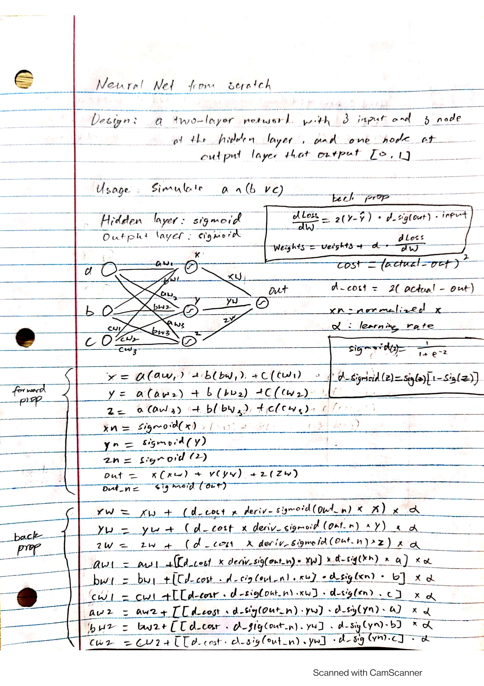

Machine Learning from Scratch
I worked out how a neural network learns on paper, then implemented it in Python. These five projects trace my experiments from individual weight updates to tool-calling agents and local inference.

A neural network from scratch
I designed the network by hand and wrote the Python scripts that implement its forward pass, backpropagation and weight updates. The network learns a rule you can check by hand. Given three numbers, is the first greater than the sum of the other two?


A single perceptron in C
Can one neuron learn whether the first of three numbers is larger than the other two added together? I used four labeled triples to train a perceptron, then tested it on two new triples. In one short C program you can trace the weighted sum, the prediction error and the resulting change to each weight.
Early LLM experiments with search tools
I explored how to turn a follow-up question into a search query that makes sense outside the conversation. In a small LangGraph news agent, the model can request a Tavily search, read the results and use them in its reply. The graph makes it easy to follow the handoff from the model to the tool and back.
Serving local inference with Ollama
I built a small Flask service in front of Ollama so a client could read a model’s reply as it arrived. One debugging lesson came from response logging: reading the whole response for the log buffered the stream. I moved metadata logging ahead of the stream and passed the chunks through as they arrived.
Movie-review sentiment with BERT
I fine-tuned a BERT classifier on a subset of IMDb reviews to predict positive or negative sentiment. I wrote a separate inference script that recreates the two-label classifier, loads the saved weights and applies the same tokenizer to a new review. That let me test a sentence without rerunning training.
MNIST study reference
For digit classification, I followed a video tutorial using wwsalmon’s original Kaggle code. I copied the code with minor changes for my study notebook.